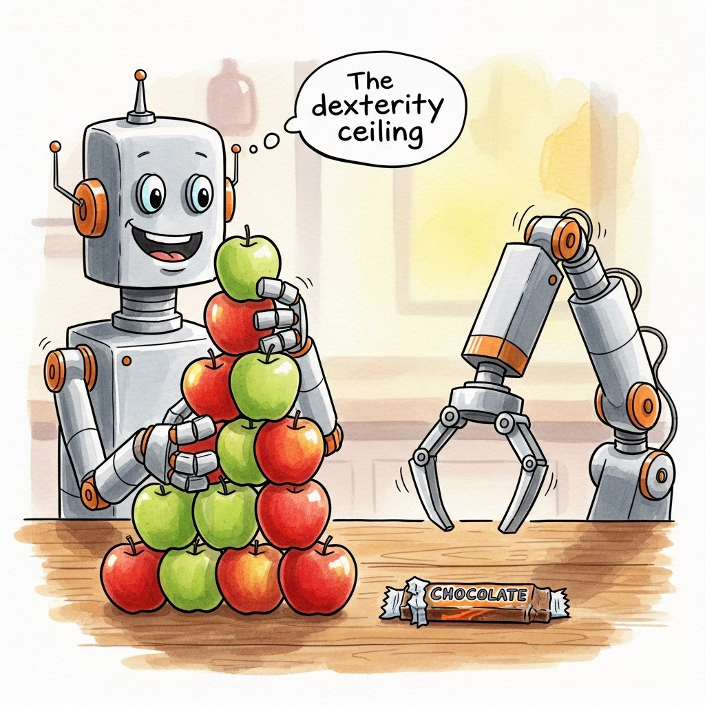
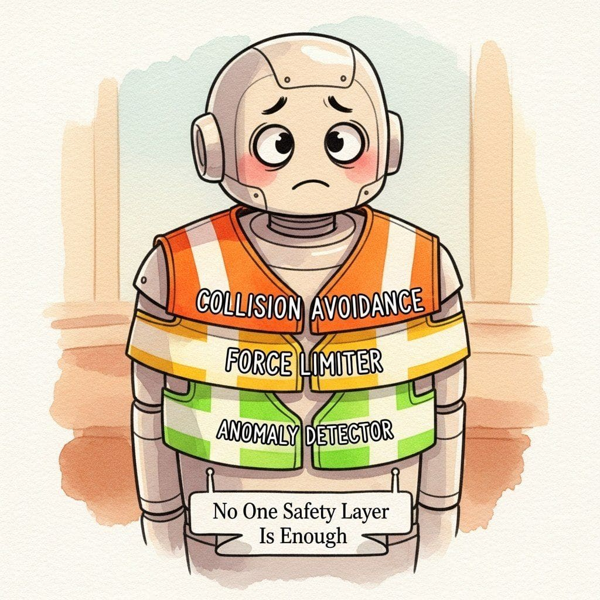

2026 VLAs work, but they work in a narrower range than the marketing implies. Three structural limitations cut across all five families surveyed in Section 24.5: the sim-to-real gap, the dexterity ceiling, and the unresolved safety story. This section names each limitation precisely, explains why it has not yielded to model scaling, and points toward the research directions most likely to dent it in 2026-2027.
24.6.1 The Sim-to-Real Gap
The first structural limitation is that a policy trained entirely in simulation drops 30 to 50 percentage points in success rate when deployed on a real robot of the same nominal embodiment. The gap is dominated by visual domain shift, contact-dynamics mismatch, and per-unit robot calibration, and crucially it scales with training data only at 1 to 2 pp per order of magnitude, far slower than overall success rate. That is enough to know in this limitations tour. The full anatomy of the gap, the mitigation stack (domain randomization, system identification, real-world fine-tuning, hardware-in-the-loop validation), and the 2025 to 2026 deployment playbook are covered as their own section in Section 24.13: Sim-to-Real Gap.
24.6.2 The Dexterity Ceiling

Every VLA surveyed in Section 24.5 can do "pick the apple and put it in the bowl". None of them, as of Q1 2026, can reliably do "unwrap the candy bar". The structural problem is that the public VLA datasets are dominated by single-arm, two-finger gripper tasks where the action space is 7-D and the contact patches are small. Multi-finger manipulation, in-hand reorientation, and contact-rich assembly require either much higher-dimensional action spaces (the Shadow Hand has 24 DOF) or qualitatively different control strategies (impedance control, tactile feedback) that current VLAs do not model.
| Task category | Action DOF needed | Best 2026 VLA success (%) | Human baseline (%) |
|---|---|---|---|
| Pick-and-place | 7 (end-effector + gripper) | ~88 | ~99 |
| Two-arm coordination (no contact) | 14 (bimanual) | ~76 | ~98 |
| Two-arm contact (e.g. plate handoff) | 14 + contact | ~58 | ~95 |
| In-hand reorientation | 16-24 (multi-finger) | ~12 | ~85 |
| Tool use (screwdriver, scissors) | 7-14 + force control | ~22 | ~90 |
| Fine assembly (snap-fit, threading) | 7 + 6-D tactile force | <10 | ~80 |
The data-scaling argument from Section 24.4 applies to distribution coverage: more diverse robots and tasks in training improve generalization to new robots and tasks. Dexterity is a different problem: it requires action-space coverage, including 24-DOF hand actions and tactile feedback channels that simply do not exist in the OXE mixture. Collecting that data is harder than scaling existing teleop pipelines, because operating a multi-finger hand by teleop is itself a research problem. Dexterity will likely require new hardware (cheap dexterous hands like the LEAP hand) plus new training paradigms (RL on simulated dexterous tasks, then sim-to-real with tactile co-training) before it scales the way pick-and-place did.
24.6.3 The Safety Story Nobody Has Solved

Text-LLM safety is hard, but a misbehaving text LLM produces tokens that humans can read, ignore, or filter. A misbehaving VLA produces motor torques that move a 30 kg robot through space. The failure modes are physical, irreversible, and potentially injurious. No 2026 VLA family has a fully satisfactory safety story; the working practice is to bolt on three orthogonal safety layers:
- Hard collision avoidance: a separate non-learned layer (typically a real-time OBB or SDF check) halts the robot if the predicted next pose enters a forbidden volume. This is required by every safety-certification body and is not negotiable.
- Speed and force limits: a hardware-level torque clamp prevents the robot from exerting more than a few Newtons on any contact point, on the theory that even an incorrect motion at low force will not injure a bystander.
- Anomaly detection on the action stream: a classifier monitors the predicted action chunks for out-of-distribution patterns (sudden direction changes, action magnitudes outside training distribution) and triggers a soft stop.
# Sketch of the three-layer safety stack that runs around a VLA in production.
import numpy as np
class SafetyWrapper:
def __init__(self, policy, collision_checker, force_limiter, anomaly_detector):
self.policy = policy
self.collision = collision_checker
self.force = force_limiter
self.anomaly = anomaly_detector
def step(self, obs, instruction):
action = self.policy.predict(obs, instruction) # the VLA decision
# Layer 1: hard collision avoidance. Never negotiable.
if self.collision.would_collide(action, obs.scene_geometry):
return self._emergency_halt(reason="collision predicted")
# Layer 2: force/torque clamping. Hardware safety net.
action = self.force.clamp(action, max_force_n=15.0)
# Layer 3: anomaly detection on the action stream.
if self.anomaly.is_anomalous(action):
return self._soft_stop(reason="OOD action")
return actionIf a VLA misbehaves and someone is injured, the legal and ethical responsibility lies with the integrator who deployed it, not with the model authors. This shapes the working practice in 2026: every commercial robot deployment treats the VLA as a "fallible policy" with a non-learned safety envelope around it. The envelope's parameters (max force, max speed, forbidden volumes) are tuned to the deployment context. This is the inverse of the chat-LLM situation, where the model itself is the last line of defense; in robotics, the model is rarely allowed to be the last line of defense.
24.6.4 The Language-Understanding Cliff
VLAs inherit the language capabilities of their underlying LLM trunk, but their grounding to physical action is much weaker than their grounding to text. A VLA understands "place the red block on the plate" perfectly. It performs worse on "place the block on the plate after you finish stacking the others". It frequently fails on negation ("do not pick up the red block"), temporal ordering, and counterfactual reasoning ("would this fit if I rotated it 90 degrees?"). The cliff is steep: an instruction one or two compositional steps beyond the training distribution drops success by 30-50 percentage points.
One stress-test that has become a community in-joke: tell a VLA "pick up the block that is not red" in a scene with one red and one blue block. Most 2026 VLAs pick the red block roughly 40 percent of the time, because the policy attends to the salient noun phrase ("red block") and weakly to the negation. This is the same negation failure that plagued early instruction-tuned LLMs (Asai et al., 2023), now visible in the action stream rather than the text. Fixing it requires training data with negation in the instructions, which is a small fraction of existing teleop corpora.
24.6.5 The Evaluation Problem
VLA evaluation is harder than LLM evaluation in three ways. First, real-robot evaluation is slow: a single benchmark run takes hours per task per model. Second, it is non-reproducible across labs: small differences in robot calibration, camera placement, and lighting cause 10-20 percentage-point swings in reported success. Third, simulation evaluation is biased: the LIBERO and ManiSkill simulators are biased toward tasks that simulate cleanly, which underrepresents the contact-rich and deformable-object tasks the field most needs to advance on. The community's response in 2025-2026 has been the SimplerEnv suite (Li et al., 2024), which provides a standardized real-robot evaluation protocol with shared hardware lists and lighting standards. Adoption is partial; most published results still mix protocols in ways that frustrate comparison.
Three research threads are credibly attacking these limitations in 2026. (a) Tactile-augmented VLAs (DIGIT, GelSight) add force and texture sensing as additional input modalities, which is the most plausible attack on the dexterity ceiling. (b) World-model integration (covered in Chapter 41) lets the policy mentally simulate the next few seconds before acting, which addresses the temporal-reasoning weaknesses of pure feedforward VLAs. (c) Real-robot RL from VLA priors: use the VLA as the policy initialization and run on-robot RL with safety constraints to close the sim-to-real gap on a specific task family. None of these threads has produced a published model that beats pi-0.5 on a public benchmark, but the directions are promising.
24.6.6 When VLAs Are the Wrong Tool
It is worth ending on the cases where you should not use a VLA at all. If your task is fully scripted (industrial pick-and-place from a fixture, well-defined assembly), a classical motion planner plus a learned grasp model will outperform a VLA at lower cost and higher predictability. If your task is open-ended exploration (drone navigation, search-and-rescue), an RL policy with a different sensor mix will probably work better than a VLA. If your task requires sub-millimeter precision (electronics assembly, surgical robotics), VLAs are nowhere close to the precision floor that classical impedance control or vision-feedback servoing can deliver. The VLA sweet spot is "semi-structured manipulation with natural-language instruction in a moderately variable environment". That is a large and important slice of robotics work, but it is not all of robotics.
Key Takeaway
Three structural limitations cut across every 2026 VLA: a ~30 pp sim-to-real gap that scaling does not close, a dexterity ceiling above 7-DOF / multi-finger manipulation, and an unsolved safety story that forces production deployments to wrap the policy in a non-learned envelope. Knowing where the limits live is the difference between shipping a working system and pitching investors on a robot that does not exist yet.
Show Answer
Show Answer
Show Answer
Continue to Section 24.7: SayCan: Grounding LLM Plans.
Chapter 24 covered the policy layer: what a VLA looks like, how it is trained, what it cannot do. Chapter 24 moves up one layer to the planner: how do you ask an LLM to decompose a high-level instruction into the subgoals a VLA can execute? The SayCan, Code-as-Policies, and VoxPoser families covered there are what sits on top of OpenVLA or pi-0 in a working production stack.